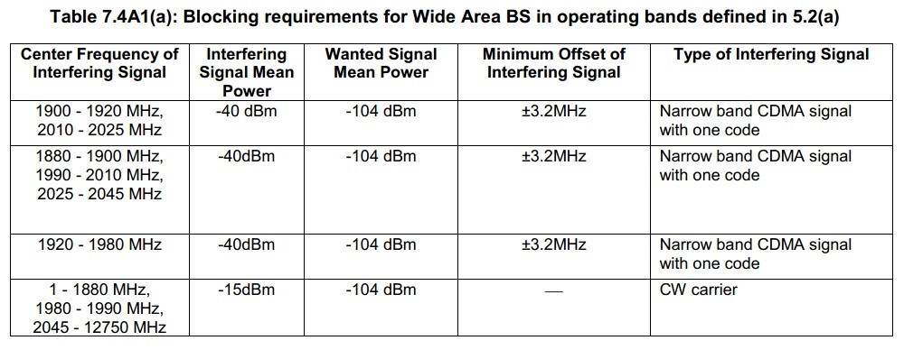
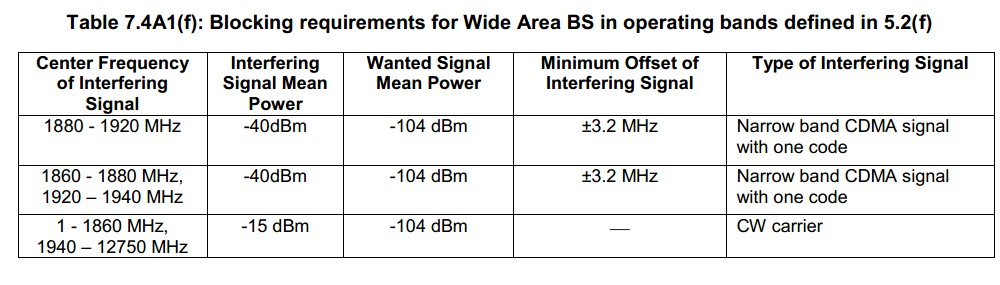
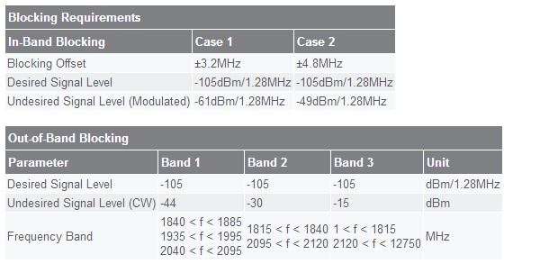

阻塞特性是指在其他频点上（不包括相邻信道的频点，与ACS区别所在）存在干扰信号时，接收机接收有用信号的能力。
阻塞特性主要衡量链路抗强干扰的能力。该指标主要由射频滤波器和信道滤波器来保证。
根据3Gpp标准，阻塞包括带内和带外两个部分。对于带内的阻塞干扰，要求中频选择避免产生互调干扰、信道滤波器需要对阻塞信号有足够的抑制能力。采用宽带中频时阻塞干扰落在中频频带内，因此还要保证收信通道有足够的动态范围。
A频段：

E频段：

对于基站的指标要求，根据3Gpp标准，接收机的输入功率为 Pin=-104dBm时，接收的总的噪声功率（包括干扰）为
Psum=P-Ec/Io-Ma=104dBm+5.8dB-1.8=-100dBm
这其中包括-106dBm的热噪声（PN=PNo+NF(基站NF典型值7dB，UE终端典型值9dB)=-106dBm）以及信道滤波后残留的CDMA干扰
PI=-101.25dBm，因此在3.2MHz处的选择性应该达到101.25-40=61.25dBc以上。
此外，带内的阻塞电平还对本振的相位噪声提出了要求，参考倒易混频
对于带外的阻塞干扰，主要靠天线滤波器、收信机中的射频滤波器和混频器的特性来保证足够的抑制。
带外干扰重点考虑的应该是混频镜像、半中频((RF+FLO)/2)和偏离本征谐波的一个中频的频率点(nFLO+_IF)
收信链路对镜像频率的抑制要达到101.25dBm-15dBm=86.25dBd，主要靠天线滤波器和收发信机中的射频滤波器保证。此外，射频放大器的带宽特性也可以提供一定的抑制能力。
